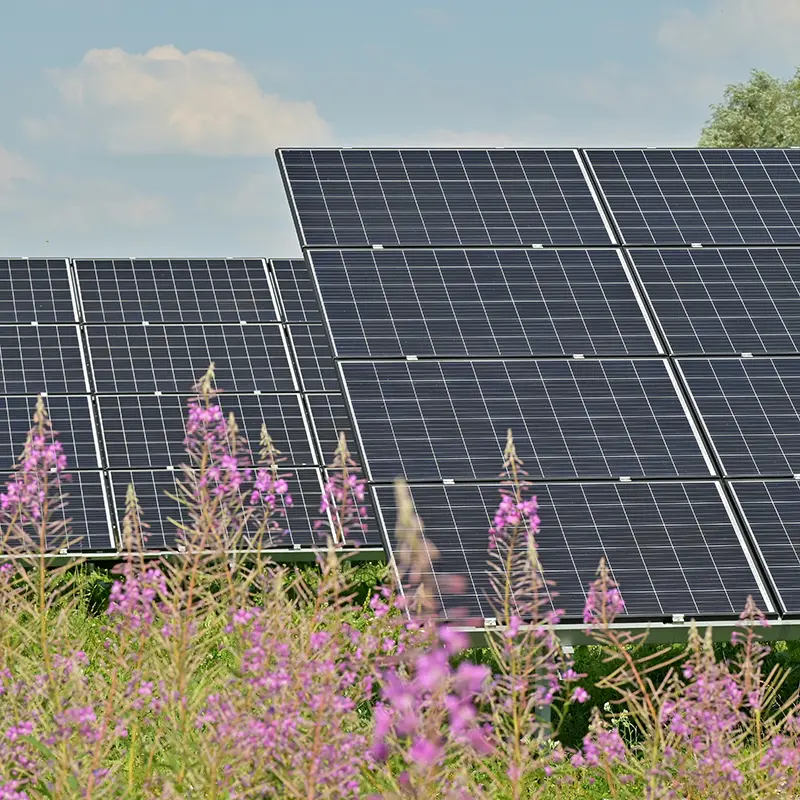

Solutions for affordable green energy:
Installing community solar panels
A solar garden is a system of solar panels that belong to the community and are connected to the homes and offices to supply power for water, heat, and electricity. This helps in decreasing the overall energy expense of the community. Such projects are gaining popularity. They will make up a large part of the market in the future years. Community solar gardens are usually situated on extensive roofs or ground space and supply the produced electricity to the subscribers’ homes and devices. It has many advantage: availability of renewable energy, clean energy generation and contribution to the renewable energy goal. The Community Solar Program funds these gardens and the sales of electricity subscriptions, enable project owners to develop, own and manage these gardens in order to help everyone increase affordability and access of solar power.